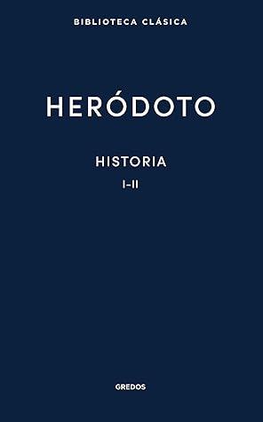

Historia. Libros I-II
Reseña por Jorge I. Zuluaga

Ver reseña en GoodReads (necesita cuenta)
Como es de esperarse, no se trata de una lectura sencilla o amena como lo es la lectura de textos de divulgación historiográfica que abundan tanto en el presente. Para quiénes no somos profesionales de la historiografía y que no necesitamos leer a autores clásicos como Heródoto en razón de nuestro trabajo, meterle el diente a un texto así es una especie de pena autoimpuesta.
Aún así, para los aficionados que nos apasiona la antigüedad y en especial la Historia de los pueblos y gentes que vivieron alrededor del Mediterraneo y el oriente próximo, no puede haber nada más satisfactorio que leer a un autor de hace 2450 años describir, a través de sus propias experiencias, por las experiencias de sus contemporáneos o simplemente a través de las leyendas de su tiempo, cómo era el mundo de aquel entonces.
Personalmente me sentí transportado en una máquina del tiempo a épocas y lugares sobre las que me gusta leer y conocer tanto. La experiencia de leer a Heródoto supera por mucho la de leer un texto, un autor o una autora académica del presente - o de los siglos que nos precedieron, y que saben de aquellos tiempos, lugares y gentes, lo que nos ha enseñado la arqueología y las propias historias que encontramos en libros antiguos.
Sin querer afirmar que las historias modernas sobre el mundo antiguo son distorsionadas o artificiosas - en realidad la investigación historiográfica moderna ha revelado cosas sobre el pasado que ni los habitantes de aquellos tiempos sabían - una cosa es leer un libro escrito en los 2000 (o en los 1800, no hay mucha diferencia) por una persona que visitó enclaves arqueológicos o leyó muchos libros sobre el pasado y otra muy distinta es leer directamente de Heródoto la experiencia vivida, por ejemplo, al visitar personalmente el laberinto del Hawara en Egipto, un enclave fascinante del que hoy no quedan sino ruinas en el desierto, pero que el autor de "Historia" conoció directamente cuando todavía era un deslumbrante complejo de palacios en uso por los pueblos que los construyeron. Una cosa es opinar o deducir lo que pensaba o recordaba un Egipcio sobre el gobierno de un faraón (por ejemplo alguno de los constructores de las grandes pirámides) y otra conocer la posición transmitida a Heródoto por los sacerdotes egipcios sobre esos mismos gobernantes.
Los primeros dos libros de Historia de Heródoto se concentran en dos pueblos específicos. En el libro I, entre muchas otras cosas, Heródoto nos cuenta la historia del surgimiento del poder Persa en levante. Es fascinante conocer como un pueblo de pastores de las montañas, sometidos a la dominación de otros pueblos más poderosos, Asirios, Medos y Lidios y de cuya existencia sabemos hoy solo en los textos académicos, se convirtió a la larga en un poderoso imperio capaz de dominar al antiguo, venerado y muy organizado Egipto y a los combativos pueblos de la península anatólica, el Egeo y parte de la Heleade (Grecia). Todos hemos oído hablar del Imperio Persa. En este libro se relatan algunas historias sobre su origen.
Una de las mejores características de los libros de Heródoto es la combinación de buena Historia, cuentos populares, leyendas y mitos, pero también la importante dosis de geografía y etnografía que utiliza para describir los lugares y las personas que vivían en las regiones que recorre y describe. Disfrute mucho, como físico y astrónomo, de las referencias a patrones de medida de distancia, área, peso e intercambio de valores que se usaban en aquel tiempo; pero también, las referencias a fenómenos y patrones de tiempo atmosférico, fenómenos relacionados con los ríos y otras descripciones naturales que se cuelan entre las historias de Heródoto. Las teorías por ejemplo sobre el origen del Nilo y sus inundaciones son increíbles.
Naturalmente todo lo que se lee en este libro, como seguramente lo saben bien quienes son profesionales de la historiografía o la arqueología y que han estudiado a fondo la obra de Heródoto, debe juzgarse con mucho cuidado. Estamos hablando de un libro que fue escrito en un tiempo en el que los estándares de objetividad que caracterizan a la investigación moderna de estas materias estaban lejos de establecerse sobre bases y prácticas seguras. Es justo por esa falta de rigor científico que en Heródoto puedes pasar fácilmente de leer sobre los usos y las costumbres de los griegos del siglo VII a.e.c. a una descripción sobre el origen de los dioses 10.000 años antes de su narración, como si se tratara de materias comparables.
En el libro II, mi preferido sin lugar a duda, Heródoto se explaya en hablar del que el mismo llama el antiguo y glorioso - este último adjetivo es mío - país de los Egipcios.
Al ser un aficionado de la egiptología he disfrutado como niño pequeño de las descripciones pormenorizadas que hace de Kemet un contemporáneo del Egipto del período tardío, época en la que se ubican la mayor parte de las historias que narra Heródoto. Gracias a que sé un poquito más sobre la historia de Egipto que la de otros pueblos de la antigüedad - pero solo un poquito más, he podido también juzgar mejor la veracidad de algunas afirmaciones sobre el antiguo Egipto, en especial aquellas relacionadas con la cronología, que en muchas ocasiones descubrí muy desfasada a la luz de más recientes investigaciones arqueológicas. Así por ejemplo, Heródoto calcula en casi 10.000 años la edad del País de las Dos Tierras, cuando hoy sabemos que, en su tiempo no tenía más de 3.000. Algunos gobernantes que menciona en su obra - especialmente del reino antiguo y el reino intermedio - los considera alejados de su tiempo a lo sumo 800 o 1.000 años, cuando en realidad lo separaban de ellos hasta 2.000 años. Nada de esto sin embargo le quita mérito a la obra inmortal de uno de los primeros historiógrafos y geógrafos de la Historia.
Me ha sorprendido especialmente la descripción de los dioses y las costumbres religiosas del Egipto que conoció Heródoto o, por lo menos aquellas que le describieron los sacerdotes con los que tuvo la oportunidad de interactuar. Si bien estoy muy familiarizado con la tendencia de que los nombres egipcios se helenizaran sistemáticamente en la antigüedad, tendencia que hace que hablemos de Amenofis y no de Amenhotep, de Keops y no de Jufu, de Micerino y no de Menkaure, emergiendo los nombres originales egipcios, en su mayoría, solo a partir la investigación filológica moderna y a pesar de que consideremos la helenización una tendencia sesgada de los griegos hacia sus lenguas, no hay que olvidar que en el tiempo de Heródoto buena parte de la lengua Egipcia, en particular la escritura sagrada de los jeroglíficos, solo era conocida por escribas o sacerdotes; es, por tanto, muy posible que hoy sepamos más sobre los nombres egipcios de lo que sabía un historiador griego del 400 a.e.c.
Volviendo a los dioses, me sorprendió conocer, a través de la lectura de Heródoto, la intrigante idea - tal vez difícil de sostener en el presente - de que muchos dioses griegos pudieron tener su origen en la religión Egipcia. Que Zeus pudo ser originalmente el Amón egipcio, que Dionisios tal vez fue la versión griega de Osiris o que Apolo - tan importante en todas las religiones de oriente - fue en sus orígenes el mismo Horus. Todo sin enumerar en detalle una larga lista de equivalencias mencionadas por Heródoto en el libro II de su Historia.
Me encanto también leer sobre la geografía del Egipto que conoció Heródoto y que describe con muchos detalles, detalles que quién lea el libro con impaciencia encontrara innecesarios, pero que yoi encontré fascinantes. Me gusto especialmente porque se basa en la experiencia personas de la época sobre el terreno y no, como hemos terminado imaginándolo todo hoy, en vistas aéreas o espaciales del mismo territorio.
Es así como leemos en Heródoto que muchos en aquel tiempo consideraban que Egipto era solamente el país de las gentes que habitaban relativamente cerca a la costa del Mediterráneo, allí donde desemboca el Nilo (el delta o bajo Egipto). Y es que no seguramente no era fácil para un visitante griego, árabe o sirio, unificar mentalmente los 1.000 km de extensión del Egipto medio y alto que tuvo, mil años antes de las historias de Heródoto, una importancia central en la Historia del país de las dos Tierras. En este punto vale la pena señalar que en el tiempo en el que se narran las historias de Heródoto, el centro político y religioso de Egipto había migrado hacia el delta, en parte por la dominación persa que vivió el país en aquellos tiempos y que tanta importancia tiene en los libros de Heródoto.
Para no extenderme más en esta reseña, me gustaría finalmente recomendar a todas aquellas personas que como yo disfrutamos de la Historia y en especial amamos la Historia y la cultura del antiguo Egipto, que no dejen de leer, por lo menos, el Libro II de la Historia de Heródoto. Como sucede con la lectura de la Ilíada, la Odisea o la Eneida, la lectura de estos clásicos universales nos permitirá entender el contexto de las cientos de citas y referencias que encontramos en la divulgación sobre estas grandes obras.
No es fácil leer a Heródoto, pero tampoco es imposible.
Unas notas finales sobre la edición y las traducciones del libro.
La traducción que estoy leyendo de Heródoto (porque apenas voy en los dos primeros libros de la colección de 9 que conforman su Historia) es aquella que editó Manuel Balasch con la editorial Cátedra. Hay muchas ediciones de la Historia de Heródoto. En particular, aquí en Goodreads, he registrado que estoy leyendo la que hizo Gredos cuando no es verdad (me encantaría, pero cuesta mucho más). Lo hago solamente porque no sé si leeré finalmente los 9 libros. La edición de Gredos está convenientemente dividida en pares de Libros y es más conveniente para ir registrando el avance de la lectura.
La traducción de Balasch me ha gustado mucho (es la única que leído en realidad) lo mismo que sus notas al pie que son en su mayoría de naturaleza filológica. Aunque no se de griego antiguo y por lo tanto no puedo juzgarlas, me han permitido asomarme a la dificultad implícita en la traducción de una obra como esta.